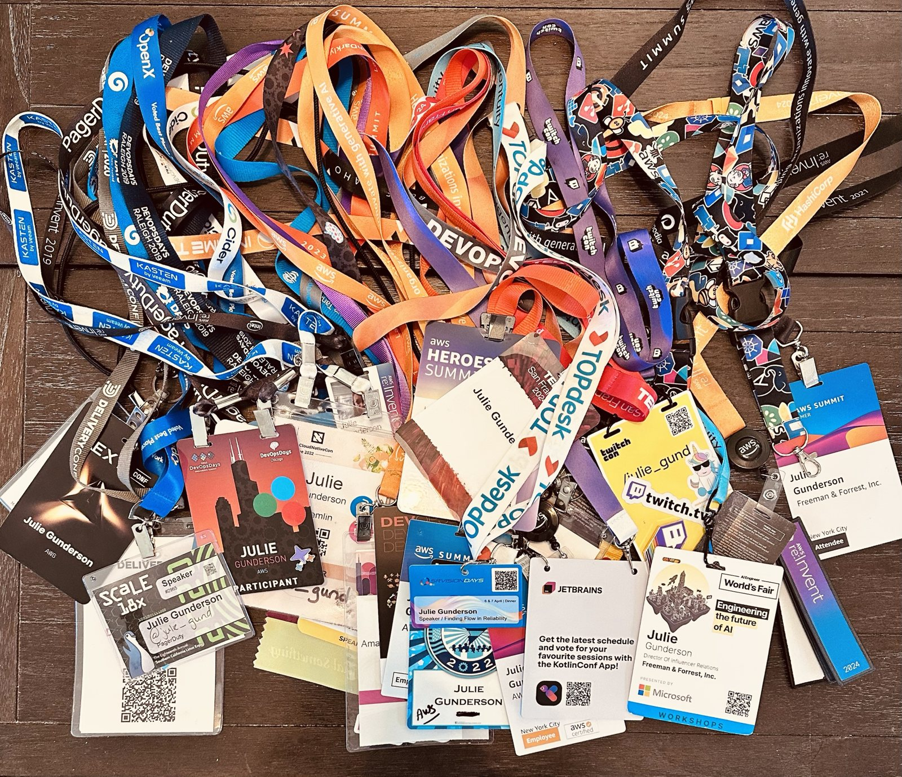

Blog
Beyond the Badge: Seeing People, Not Titles
What if some of the most important things we learn throughout our careers have very little to do with the work itself?

It All Started With Hello
I remember the very first tech conference I ever attended.
I knew NO ONE. Not a single person.
I was brand new to the field, and to make matters worse, I was a recruiter.
Now, at the time, I thought being a recruiter was a pretty awesome job. I got to help people find great opportunities! Who wouldn't want to talk to me?
Well, apparently, a lot of people in tech.
I hadn't yet realized just how much recruiters were disliked by some engineers. So there I was, knowing absolutely nobody, and I walked up to a group of women and said hi.
I started asking questions. What did they do? What were they working on? How did they get into tech? I was new to this world, and these women knew things I didn't. I wanted to learn.
They were wonderful. They introduced me to other people, who introduced me to more people, and before I knew it, I had people walking me around the conference introducing me to everyone they knew.
That was how my career in tech began.
Years later, at a conference I had organized, several of those same people were there. We got to reminiscing about how we'd met, and they told me something I hadn't realized at the time.
They'd never met a recruiter who seemed truly interested in what they were working on, the technology, or who they were as people. Most of their experiences with recruiters had felt transactional. Someone wanted to place them in a job, get a referral, or get something out of the conversation.
I hadn't asked them for anything. I just thought they were interesting and they still remembered that.
That first conference also left me with a habit I've carried ever since: when I see someone sitting alone, I go say hi. I remember what it felt like to walk into a room full of strangers. Some of those conversations became lasting friendships, and others were simply enjoyable moments with someone I'd never see again. Both were worth having.
What Tech Taught Me Before I Knew It Was Teaching Me
Lately, as I've been working toward my master's degree in Clinical Mental Health Counseling, I've been surprised by how familiar some of what I'm learning feels. On the surface, tech and counseling seem like very different worlds, but I'm discovering some interesting connections between them.
We're learning about listening without judgment, setting aside assumptions, and approaching people with genuine curiosity. One concept in particular has stuck with me: unconditional positive regard, from Carl Rogers' person-centered approach to counseling. At its heart is the idea of accepting and valuing people without placing conditions on their worth.
Learning about it made me think back to those women at my first conference. They welcomed a complete stranger who happened to be a recruiter, even though their previous experiences with recruiters hadn't been particularly positive. They didn't have to give me their time, much less introduce me to their friends.
I wouldn't equate a conference conversation with a therapeutic relationship, but there's something about that openness and willingness to see the individual rather than the label that resonates with what I'm learning now.
It's also made me think about how I've approached people over the years. I've never been particularly interested in someone's title or status. Half the time, I didn't even know who I was talking to. I was just interested in the person.
And that brings me to a few other stories.
You Never Know Who You're Talking To (And That's Kind of the Point)
At one of my early conferences, I struck up a conversation with a guy who had just given a talk. We had the funniest, dorkiest conversation. I don't even remember what we talked about, but I remember how much fun it was.
Afterward, someone came up to me practically beside themselves.
"OMG, you know him?!"
"Um, no. I just met him. He's cool."
Apparently, he was a BIG deal in the industry. I had absolutely no idea. To me, he was just a guy with an interesting story who was fun to talk to.
The person asked if I could introduce them, so of course I did.
It reminds me of something else I noticed at conferences. If you've attended AWS re:Invent, you've probably noticed the different colored lanyards identifying press, VIPs, general attendees, and expo-only access.
One year, we brought our CEO to AWS re:Invent. We knew he wasn't going to attend sessions and would spend his time in meetings, so we gave him one of our booth passes.
Our CEO was walking around the conference with an expo badge, and a title to match "Booth Staff".
Someone making assumptions based on that badge could have dismissed him without a second thought. A badge tells you what kind of access someone has. It doesn't tell you who they are, what they've accomplished, or whether they might be the most interesting person you'll meet all week.
And really, we wear badges everywhere, not just at conferences. At work, we wear titles. CEO, engineer, recruiter, professor, student. Some of those labels come with prestige, others with assumptions, and some with a reputation we didn't necessarily earn ourselves.
But none of them tells the whole story of the person behind them.
Titles change. Jobs change. Companies change. But the relationships we build can last long after we've moved on from all of them.
How You Treat People Matters, Even When You Think Nobody's Watching
The very first time I spoke at a conference, I was wandering through the expo hall right as it opened. I spotted a booth with some really cool swag, and if you know me, you know I appreciate good conference swag. I walked up to the woman working the booth and asked if I could have one.
She looked at me and, in the most condescending tone, informed me that the swag was for conference attendees, NOT expo staff.
Excuse me?
I had a regular conference badge. It had just flipped around so she couldn't see the front. She took one look at me and decided I must be working a booth, or at the very least was not worthy of their swag (I couldn't help wondering whether being a woman had something to do with that assumption).
So I turned my badge around and asked, "Does being a speaker count?"
Needless to say, I decided I didn't want the swag anymore. But I never forgot that company.
Another experience that stuck with me happened during a job interview. I went in for a group interview and struck up a conversation with the receptionist while I waited. She was lovely, and we had a great time chatting.
I got the job.
Sometime later, the company needed someone to cover the front desk while candidates came in for another group interview. I volunteered. That's when I learned that I was also being asked to provide feedback about how the candidates behaved in the waiting room.
How did they treat the person at the front desk? Were they friendly? Dismissive? Rude?
I found that fascinating. You never know who's paying attention, but more importantly, you shouldn't need to know. The way we treat people shouldn't depend on who we think they are or what they might be able to do for us.
Curiosity Doesn't End When You Leave the Classroom
One thing I'm enjoying about graduate school is getting to know the people teaching us, not just learning the material they're teaching.
I recently mentioned to a classmate that I try to schedule a meeting with every professor I have. She was surprised and thought it sounded a little like sucking up.
I laughed because that honestly hadn't occurred to me.
I want to know how they got where they are. Why they chose counseling. What their careers looked like. What they'd do differently. What advice they'd give someone starting out.
Every professor I've met with so far has been wonderful. I've heard fascinating stories, gotten great advice, and learned things I never would have learned in class.
During our recent counseling residency, I also brought a bunch of 3D-printed fidgets to give away. This is a habit of mine. Freeze-dried Skittles, little unicorns, fidgets, whatever I've been making lately. I even bring things for flight crews when I travel.
I gave the fidgets to classmates and professors, but also to the women working so hard to check everyone in and keep things running.
Turns out, they were professors in the program, too.
I had no idea.
And honestly, it wouldn't have mattered if they weren't. They were kind, they were helpful, and I appreciated them. That's reason enough.
Don't Just Build a Network. Share It.
I think somewhere along the way, networking became synonymous with figuring out what other people can do for you. Who can help me get a job? Who can introduce me to someone important? Who has influence?
And sure, relationships can open doors. Mine certainly did. But if your only reason for talking to someone is what you hope to get out of them, people can usually tell. They can smell that "I'm only in it for me" attitude from a mile away.
I know firsthand what a difference an introduction can make. Over the years, I've tried to return that generosity. If I know two people who might benefit from meeting each other, I introduce them. If someone is attending their first conference, I try to make them feel welcome. If I can share something I've learned, I do.
I recently introduced that same classmate to a professor I thought she'd enjoy meeting. Not because I was keeping score or expecting a favor in return, but because I thought they might have an interesting conversation.
It's something those women at my first conference taught me without ever realizing it themselves. When someone opens a door for you, it's worth remembering to hold it open for the next person.
Some Things Don't Change, Even When Everything Else Does
We're living in a time when technology makes it easier than ever to reach people. AI can help us write messages, find connections, prepare for conversations, and communicate across the world.
But reaching someone and connecting with them aren't necessarily the same thing.
When I think about the relationships that shaped my career, they didn't start with perfectly crafted introductions or clever networking strategies. They started with conversations, unexpected kindness, and people who took the time to get to know each other.
Now, as I move into counseling, I'm appreciating those experiences in a different way. I'm learning more about what it means to truly listen, to be present, and to understand someone without immediately making assumptions about them.
Technology will change. Careers, job titles, and industries will change. But our need for genuine human connection isn't going anywhere.
And maybe that's what all those years of conference badges have really taught me. The names, titles, and companies printed on them were never the most important part.
It was always the people.
Also, it never hurts to bring Skittles.
Julie Gunderson is a community builder and speaker, now working toward her Master's in Clinical Mental Health Counseling.